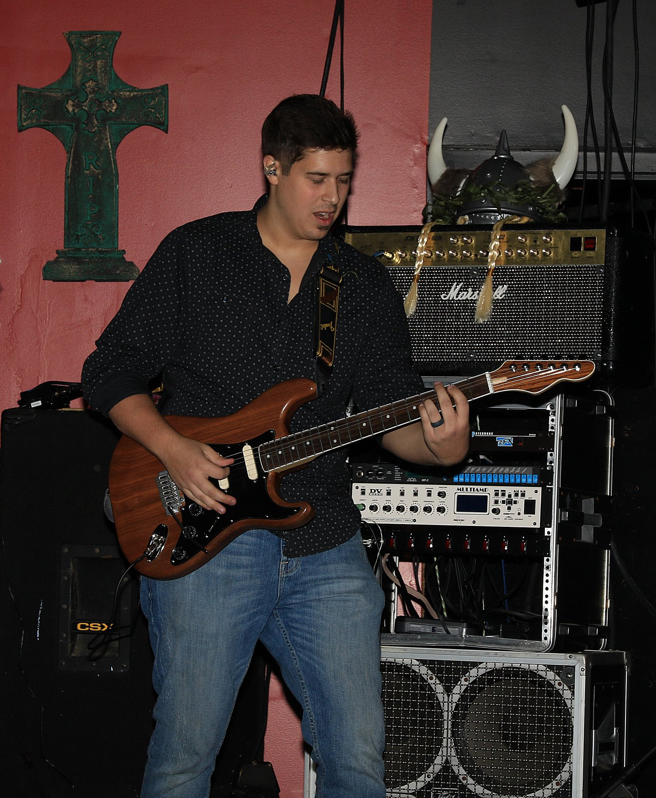

 My name is Michael and I have been playing and
building guitars for over a decade. My love of playing started with a family tradition of
musicians. My grandfather was a touring musician as well as a guitar teach,my grandmother was a jazz singer,
my uncle is a studio musician who has played with some of the top musicians, and both my aunt and my mother are both
singer songwriters. Everytime my family would get together there would be singing and playing all throught the day.
When I turned 10, I wanted to join in and be apart of the impromptu concerts they would have in the living room, so I
picked up one of my moms old guitars and started teaching myself to play. After a few years of playing and aquiring
different guitars through lawn mowing money, I started to gain interest in how the guitars I played were made. This
lead me to a local luthiers group. After attending meetings for a few months, I set out to build my own guitar. It
took me 6 months and alot of trial and error, but at 14 I had created my first guitar. It was a Stratocaster style
electric guitar with a full maple body, birdseye maple neck, Seymour Duncan hotrod pickups, and a custom stain. After
that first guitar build I was hooked. From that point on I always had a project guitar in the works and by the time I
was 18 I had built my 18th guitar.
At 18 I started playing live shows in a rock band my friends had started. My friends also enjoyed building guitars
so we would often build them together. We played music and built guitars together for many years and the name Last Shot
Guitars comes from one of the last guitars I built with them. Over the years I have been lucky enough to tour playing music
of different varieties which has led me to build guitars for different purposes. While I no longer play live music anymore
I still carry a passion for building guitars.